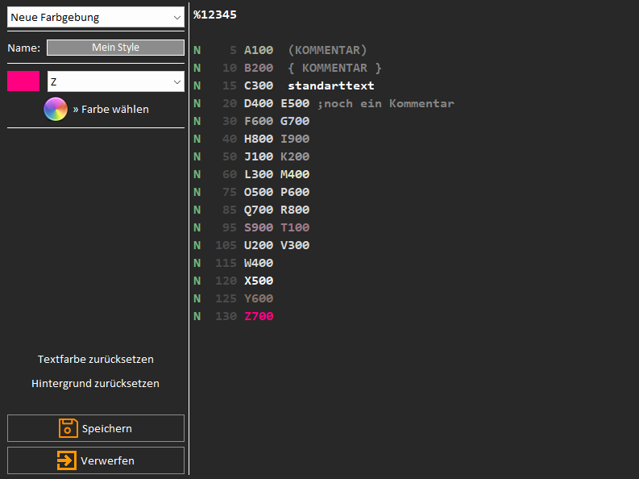

Verwendung des Editors
Funktionen der Verikalen Toolbar
Das Verhalten des Editors kann über die vertikale Toolbar bestimmt werden.

Die Funktionen sind (von oben nach unten):
- Dokument-Eigenschaften ein/ausblenden - Bei Bedarf kann das rechte Panel hier ausgeblendet werden.
- Undo - Die letzte Aktion kann hier rückgängig gemacht werden.
- Redo - Die letzte Aktion kann hier wiederhergestellt werden
- Auto-Großbuchstaben - Kleine Buchstaben werden bei der Eingabe automatisch in Großbuchstaben konvertiert.
- Auto-Satznummern - Bei Eingabe einer neuen Zeile wird automatisch eine neue Satznummer eingefügt.
- Auto-Complete - Sollte der eingegebene Text mit den festgelegten Auto-Complete Trigger übereinstimmen wird der Appendix eingefügt.
- Textfarbe - Hier kann die colorierung der Textes ein- und ausgeschaltet werden.
- Zeilenfokus - Der Fokus der aktuellen Zeile in der der Cursor steht kann an- und abgeschaltet werden.
- Text Konvertieren - Sollte nach Einfügen einer Vorlage oder Copy-Paste das Format nicht übereinstimmen kann das hier korrigiert werden.
- Satznummern neu sequenzieren - Alle Satznummern werden nach den in den Einstellungen festgelegten Kriterien formatiert.
- Texteigenschaften - Schriftart und Stil des Textes kann hier angepasst werden.
Einstellungen des Editors
Darüber hinaus kann der Editor über die Einstellungen angepasst werden.
Über den Farb-Manager kann die Farbgebung des Editors individuell beeinflusst werden.

In der Dropdown-Box kann das jeweilige Element ausgewählt werden für das die Farbe festgelegt werden soll.
Durch 'Farbe wählen' kann dann die Farbe gewählt werden.
In der Editbox kann der Name für das neue Design eingegeben werden.
Achtung
Benutzerdefinierte Farbprofile sind statisch und werden bei einer globalen Anpassung des Designs nicht automatisch mit angepasst.
Über die Autocomplete Einstellungen können neue Autocomplete-Sätze hinzugefügt werden.

Über den Plus-Button kann ein neuer Satz hinzugefügt werden. In der ersten Spalte wird der Auslöser festgelegt.
Wenn Autocomplete aktiviert ist, dann wird bei Eingabe des Auslösers der Inhalt der zweiten Spalte angefügt.
Durch Auswahl einer Zeile in der Liste können die Einträge angepasst werden.
Durch betätigen des Löschen-Buttons wird die ausgewählte Zeile gelöscht.
Über die Autosyntax Einstellungen kann die automatische Formatierung, die Satznummerierung und das Verhalten angepasst werden.